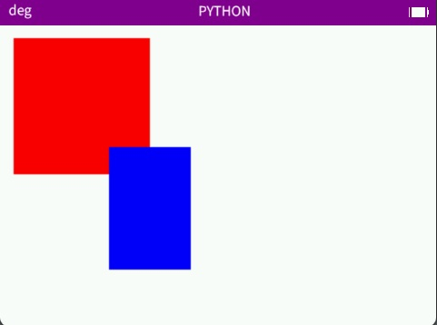
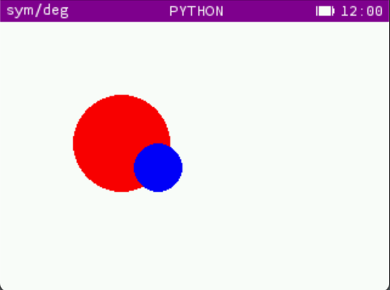
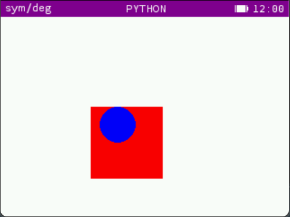
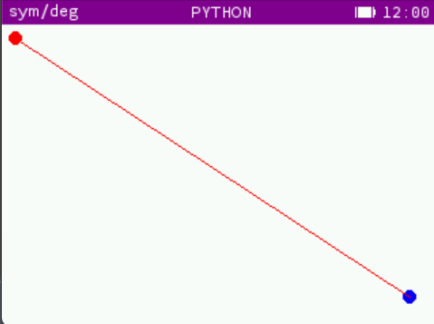

<!doctype html>
<html>
  <head>
    <meta charset="utf-8" />
    <meta name="viewport" content="width=device-width" />
    <title>Mu -- Doc</title>
    <link rel="stylesheet" href="Styles/prism.css">
    <link rel="stylesheet" type="text/css" href="Styles/doc-style.css" />
    <link rel="icon" href="Pictures/mu.ico" type="image/x-icon" />
    <script src="Scripts/prism.js"></script>
    <script src="Scripts/prism-python.js"></script>
  </head>
</html>
<body>
  <header>
    <div>
      <h1>Mu - Bring power to your Numworks</h1>
      <nav>
        <ul id="nav-bar">
          <li><a href="index.html">Home</a></li>
          <li><a href="Subfiles/install.html">Install</a></li>
          <li><a href="Subfiles/changelog.html">Releases</a></li>
          <li><a href="Subfiles/simulator.html">Simulator</a></li>
          <li>
            <a href="https://github.com/MuNumworks/MU" target="_blank"
              >Github</a
            >
          </li>
        </ul>
      </nav>
    </div>
  </header>

  <main>
    <h1>Documentation du module python Mu pour la calculatrice Numworks</h1>

      <div id="doc-articles">
        <div class="article" id="sommaire">
          <h2>Sommaire</h2>
          <ul>
            <li><a href="#pre-init">Avant de démarrer</a></li>
            <li><a href="#init">Débuter avec Mu</a></li>
            <li><a href="#led-funcs">Fonctions LED</a></li>
            <li><a href="#draw-funcs">Fonctions Draw</a></li>
            <li><a href="#collide-funcs">Fonctions Collide</a></li>
            <li><a href="#post">A venir</a></li>
            <li><a href="#credits">Crédits</a></li>
          </ul>
          </ul>
          </ul>
        </div>
        <div class="article" id="pre-init">
          <h2>Avant de démarrer</h2>
          <p>Le module python Mu (anciennement Thot) est disponible sur la calculatrice Numworks à partir de la version 1.2.0.<br />
            Il inclut de nombreuses fonctions python qui sauront vous être utiles, autant par leurs simplicité d'utilisation que par leur effets.<br />
            Il vous faut donc <a href="Subfiles/install.html" style="color: #fff;">installer Mu</a>, créer un script python, et <a href="#init" style="color: #fff;">importer mu</a>.<br/>
            (à noter que mu est importé de base dans les scripts python que vous créerez.)</p>
        </div>
        <div class="article" id="init">
            <h2>Démarrer avec Mu</h2>
            <h3>Importer Mu</h3>
            <pre style="width: 400px; padding: 2px; padding-left: 10px; padding-right: 10px; border-radius: 5px;"><code class="language-python">from mu import *</code></pre>
            <p>Pour utiliser Mu de la façon la plus facile qu'il soit.</p>
            <h3>Importer Mu (2)</h3>
            <pre style="width: 400px; padding: 2px; padding-left: 10px; padding-right: 10px; border-radius: 5px;"><code class="language-python">import mu</code></pre>
            <p>Une autre façon d'importer Mu.</p>
            <h3>Utiliser Mu</h3>
            <pre style="width: 400px; padding: 2px; padding-left: 10px; padding-right: 10px; border-radius: 5px;"><code class="language-python">mu.function()</code></pre>
            <p>Dans le cas de la deuxième importation.</p>    
        </div>

        <div class="article" id="led-funcs">
          <h2>Fonctions LED</h2>
          <h3>Allumer la LED</h3>
          <pre style="width: 400px; padding: 2px; padding-left: 10px; padding-right: 10px; border-radius: 5px;"><code class="language-python">mu.set_led(color)</code></pre>
          <p>Allume la LED en <span style="font-style: italic;">color</span> (en hexadécimal ou en <strong>RGB</strong>). La LED reste allumée tant que 
          la calculatrice n'est pas éteinte ou qu'elle n'est pas ré-allumée en noir.</p>
          <h3>Faire clignoter la LED</h3>
          <pre style="width: 400px; padding: 2px; padding-left: 10px; padding-right: 10px; border-radius: 5px;"><code class="language-python">mu.set_blinking(duration,duty)</code></pre>
          <p>Fait clignoter la LED de la calculatrice, qui sera allumée <span style="font-style: italic;">duty</span> pourcent de son cycle de <span style="font-style: italic;">duration</span> 
          millisecondes.</p>
          <h3>Obtenir la couleur de la LED</h3>
          <pre style="width: 400px; padding: 2px; padding-left: 10px; padding-right: 10px; border-radius: 5px;"><code class="language-python">mu.get_led()</code></pre>
          <p>Renvoie la couleur actuelle de la LED au format <strong>RGB</strong>.</p>

        </div>
        <div class="article" id="draw-funcs">
          <h2>Fonctions Draw</h2>
          <h3>Remplir l'écran d'une couleur</h3>
          <pre style="width: 400px; padding: 2px; padding-left: 10px; padding-right: 10px; border-radius: 5px;"><code class="language-python">mu.fill(color)</code></pre>
          <p style="margin-bottom: 0;">Remplit l'écran en <span style="font-style: italic;">color</span> (hexadécimal ou <strong>RGB</strong>). Cette fonction peut s'utiliser sans arguments, comme ci-dessous, auquel cas l'écran sera remplis en blanc.</p>
          <pre style="margin-bottom: 40px; width: 400px; padding: 2px; padding-left: 10px; padding-right: 10px; border-radius: 5px;"><code class="language-python">mu.fill()</code></pre>
          <h3>Obtenir une couleur aléatoire</h3>
          <pre style="width: 400px; padding: 2px; padding-left: 10px; padding-right: 10px; border-radius: 5px;"><code class="language-python">mu.gen_color()</code></pre>
          <p>Renvoie une couleur aléatoire au format <strong>RGB</strong>.</p>
          <h3>Le logo de Kojiverse Productions</h3>
          <pre style="width: 400px; padding: 2px; padding-left: 10px; padding-right: 10px; border-radius: 5px;"><code class="language-python">mu.logo()</code></pre>
          <p>Etant donné la collaboration entre <strong>Mu</strong> et <strong>Kojiverse Productions</strong>, 
          est intégré au module Mu une fonction afin de leur permettre d'afficher leur logo au début de leurs jeux, 
          ainsi qu'aux créateurs qui auraient reçus leur aide. Attention toutefois à ne pas l'utiliser si 
          <strong>Kojiverse Productions</strong> ne vous en a pas donné l'autorisation.<br />
          Tous les jeux officiels de <strong>Kojiverse Productions</strong> sont référencés sur 
          <a href="" style="color: #fff;">leur site</a>.</p>
        </div>

        <div class="article" id="collide-funcs">
          <h2>Fonctions Collide</h2>
          <h3>Détecter la collision entre deux rectangles</h3>
          <pre style="width: 400px; padding: 2px; padding-left: 10px; padding-right: 10px; border-radius: 5px;"><code class="language-python">mu.collideRect(rect1,rect2)</code></pre>
          <p style="margin-bottom: 0;">Renvoie <span style="color: #f00;">True</span> s'il y a une collision entre les rectangles <span style="font-style: italic;">rect1</span> et <span style="font-style: italic;">rect2</span> sinon <span style="color: #f00;">False</span>.</p>
          <div class="exemple-with-picture">
          <div class="code">
            <pre style="width: 400px; padding: 2px; padding-left: 10px; padding-right: 10px; border-radius: 5px;"><code class="language-python">## Exemple
import mu

rect1 = (10,10,100,100,(255,0,0))
rect2 = (80,90,60,160,(0,0,255))

print(mu.collideRect(rect1,rect2))
          </code></pre>
          <pre style="width: 400px; padding: 2px; padding-left: 10px; padding-right: 10px; border-radius: 5px;"><code class="language-python">>>> True</code></pre>
        </div>
          
        </div>

        <h3>Détecter la collision entre deux cercles</h3>
          <pre style="width: 400px; padding: 2px; padding-left: 10px; padding-right: 10px; border-radius: 5px;"><code class="language-python">mu.collideCircle(circle1,circle2)</code></pre>
          <p style="margin-bottom: 0;">Renvoie <span style="color: #f00;">True</span> s'il y a une collision entre les cercles <span style="font-style: italic;">circle1</span> et <span style="font-style: italic;">circle2</span> sinon <span style="color: #f00;">False</span>.</p>
          <div class="exemple-with-picture">
          <div class="code">
            <pre style="width: 400px; padding: 2px; padding-left: 10px; padding-right: 10px; border-radius: 5px;"><code class="language-python">## Exemple
import mu

circle1 = (100,100,40,(255,0,0))
circle2 = (130,120,20,(0,0,255))

print(mu.collideCircle(circle1,circle2))
          </code></pre>
          <pre style="width: 400px; padding: 2px; padding-left: 10px; padding-right: 10px; border-radius: 5px;"><code class="language-python">>>> True</code></pre>
        </div>
          
        </div>

        <h3>Détecter la collision entre un cercle et un rectangle</h3>
          <pre style="width: 400px; padding: 2px; padding-left: 10px; padding-right: 10px; border-radius: 5px;"><code class="language-python">mu.collideCircleRect(circle,rect)</code></pre>
          <p style="margin-bottom: 0;">Renvoie <span style="color: #f00;">True</span> s'il y a une collision entre le cercle <span style="font-style: italic;">circle</span> et le rectangle <span style="font-style: italic;">rect</span> sinon <span style="color: #f00;">False</span>.</p>
          <div class="exemple-with-picture">
          <div class="code">
            <pre style="width: 400px; padding: 2px; padding-left: 10px; padding-right: 10px; border-radius: 5px;"><code class="language-python">## Exemple
import mu

rect = (100,100,80,80,(255,0,0))
circle = (130,120,20,(0,0,255))

print(mu.collideCircleRect(circle,rect))
          </code></pre>
          <pre style="width: 400px; padding: 2px; padding-left: 10px; padding-right: 10px; border-radius: 5px;"><code class="language-python">>>> True</code></pre>
        </div>
          
        </div>

        <h3>Obtenir le déplacement vers un point</h3>
        <pre style="width: 400px; padding: 2px; padding-left: 10px; padding-right: 10px; border-radius: 5px;"><code class="language-python">mu.get_dir(pos1,pos2)</code></pre>
        <p style="margin-bottom: 0;">Renvoie les valeurs à ajouter à x et y de <span style="font-style: italic;">pos1</span> pour parvenir à x2 et y2 de <span style="font-style: italic;">pos2</span>.</p>
        <div class="exemple-with-picture">
        <div class="code">
          <pre style="width: 400px; padding: 2px; padding-left: 10px; padding-right: 10px; border-radius: 5px;"><code class="language-python">## Exemple
import mu

p1 = (10,10)
p2 = (300,200)

print(mu.get_dir(p1,p2,3))
        </code></pre>
        <pre style="width: 400px; padding: 2px; padding-left: 10px; padding-right: 10px; border-radius: 5px;"><code class="language-python">>>> (2.509383381501323, 1.644078767190522)</code></pre>
      </div>
        
      </div>
      </div>

      <div class="article" id="post">
        <h2>A venir</h2>
        <h3>Ce que nous prévoyons :</h3>
        <ul style="list-style-type: circle;">
          <li>Une fonction <strong>exam_mode()</strong> pour mettre la calculatrice en mode examen depuis python,</li>
          <li>Une fonction <strong>draw_string()</strong> améliorée, en reprenant le principe de <strong>
            draw_string_b()</strong>,</li>
          <li>Peut être un jour une fonction <strong>save()</strong>, qui transformera un script python spécifié 
            en application externe (un jeu par exemple).</li>
        </ul>
      </div>

      <div class="article" id="credits">
        <h2>Crédits</h2>
        <h3>Ressources utilisées :</h3>
        <ul style="list-style-type: circle;">
          <li>La Toolbox de la <a href="Subfiles/changelog.html">version 1.4.3</a> de Mu,</li>
          <li>La documentation déjà existante,</li>
          <li>Le code source.</li>
        </ul>
        <br>
        <h3>contributeurs :</h3>
        <ul style="list-style-type: circle;">
          <li>Gauthier M.</li>
        </ul>
      </div>

      </div>


  </main>

  <br />
  <footer>
    <div id="FOOTER">&copy; Systeme Eratz</div>
  </footer>
  <br /><br />
</body>
</html>